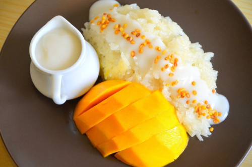
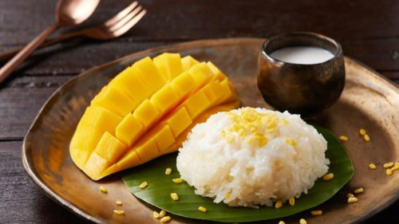

Tại xứ sở chùa vàng, dừa được dùng phổ biến nhất là để uống giải khát, nấu chè và chế biến ra những món ăn hấp dẫn khác. Sự kết hợp độc đáo giữa nước cốt dừa thơm ngọt với vị bùi của gạo nếp thơm và thanh mát của xoài nhiệt đới đã tạo nên món đặc sản.
Sau đây, BOYCOOK.com sạch xin giới thiệu cách làm món xôi xoài Thái Lan:
Nguyên liêu để làm món ăn:
-Gạo nếp thơm, chọn loại nếp cái hoa vàng hạt tròn, căng bóng
- Xoài quả to, chín vàng, thơm ngọt.
- Nước cốt dừa
- Lá dứa
- Đường trắng, muối, vừng rang
Sơ chế trước khi nấu:
-Ngâm gạo: Vo, xóc gạo nếp cho sạch bụi bẩn rồi ngâm nước 3-4 tiếng, cho hạt gạo nở mềm, trắng muốt. Sau đó, vớt ra và để ráo nước. -Xoài rửa sạch, gọt vỏ và thái lát vừa ăn.
Chế Biến:
Bước 1:Trộn gạo nếp với nửa thìa muối. Sau đó, cho gạo vào nồi hấp khoảng 20 phút. Khi xôi chín chuyển sang màu
trắng trong, mùi thơm đặc trưng, múc xôi ra bát, trộn đều với 150ml nước cốt dừa để xôi mềm và ngậy hơn.
Bước 2: Làm nước cốt dừa rưới lên xôi: Hòa nước cốt dừa với 1 chút muối và 2 thìa đường, 3 cọng lá dứa vào nồi,
đun nhỏ lửa 3 phút. Cho phần bột bắp hòa tan vào cho đến khi hỗn hợp hơi sệt lại thì tắt lửa, gắp lá dứa ra và để
nguội.
Bước 3: Cho xôi ra đĩa cùng với xoài chín cắt lát, rưới nước cốt dừa lên, rắc đều hạt vừng và thưởng thức.
Những hạt nếp chín đều, căng bóng, trong suốt hòa quyện trong vị ngọt ngào, thanh mát của những trái xoài mọng
nước tạo nên món xôi xoài thơm ngon.